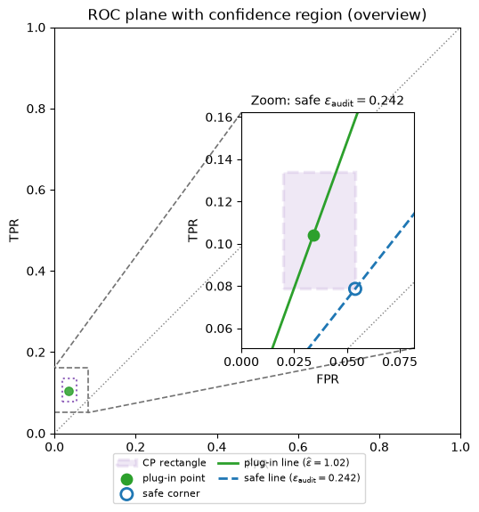

Code
PrivacyPlot(
sensitivity=1,
std=1.5,
distribution_types=[stats.norm, stats.laplace],
epsilon=1.2,
delta=0.05,
).embed()Applied Data Privacy
This is the self-study companion to the lecture deck: full narrative + all code, meant to be read and run. For the slide version (code hidden), open the presentation deck.
In the previous lecture, we saw that differential privacy can be read as a constraint on the ROC curve of the best adversary distinguishing two neighboring datasets. This lecture asks what happens when we cannot compute that ROC exactly.
Auditing is the empirical version of the same geometry: run the mechanism on two neighboring datasets, estimate how well a distinguisher can separate the outputs, and convert the result into a lower bound on the privacy loss.
The plots below are live, self-contained explorers (they run Python in your browser — the first one may take a moment to boot). Drag the sliders, press Generate Samples / Resample, and toggle Compute ε.
Let \(P = M(D)\) and \(Q = M(D')\) be output distributions on neighboring datasets, and let \(S\) be the event “the adversary guesses \(D\)” (positive).
\[\mathrm{TPR}=P(S),\qquad \mathrm{FPR}=Q(S).\]
For this lecture we keep one ROC direction fixed:
\[\mathrm{TPR} \le e^{\varepsilon}\,\mathrm{FPR}+\delta.\]
Drag \(\varepsilon\) and \(\delta\) to see the forbidden region the DP guarantee carves out of the ROC plane.
PrivacyPlot(
sensitivity=1,
std=1.5,
distribution_types=[stats.norm, stats.laplace],
epsilon=1.2,
delta=0.05,
).embed()For a fixed \(\delta\), any ROC point \((x,y)=(\mathrm{FPR},\mathrm{TPR})\) gives the one-sided requirement
\[\varepsilon \ge \log\left(\frac{y-\delta}{x}\right)\]
when \(x>0\) and \(y>\delta\). Known ROC + fixed \(\delta\) \(\rightarrow\) tightest DP line \(\rightarrow\) exact \(\varepsilon\).
This is still exact privacy-profile geometry, not empirical auditing.
For Laplace noise, the output distributions are shifts of the same known density. We can compute the ROC exactly and find the smallest \(\varepsilon\) line for a chosen \(\delta\).
TheoryROCVisualizer(
distribution="Laplace",
scale=1.0,
delta=1e-15,
selectable_distribution=False,
).embed()Gaussian noise illustrates how changing \(\delta\) changes the tight line. Drag the \(\delta\) slider to compare.
TheoryROCVisualizer(
distribution="Gaussian",
scale=1.0,
delta=0.01,
selectable_distribution=False,
).embed()The same ROC machinery is not tied to Laplace or Gaussian noise. If we can compute the PDF/CDF, we can add another distribution and repeat the exact construction.
\[f(x)=\frac{e^{-(x-\mu)/s}}{s(1+e^{-(x-\mu)/s})^2},\qquad F(x)=\frac{1}{1+e^{-(x-\mu)/s}}.\]
TheoryROCVisualizer(
distribution="Logistic",
scale=1.0,
delta=1e-15,
selectable_distribution=False,
).embed()Now define the noise procedurally:
\[Z = Z_1 + Z_2,\qquad Z_1 \sim \mathrm{Logistic}(0,s_1),\quad Z_2 \sim \mathrm{Logistic}(0,s_2),\]
with \(Z_1,Z_2\) independent. The mechanism releases \(M(D)=q(D)+Z\), giving
\[H_0: X=0+Z,\qquad H_1: X=1+Z.\]
Sampling is trivial. But we will not use a closed-form PDF, CDF, or ROC. From here on, the auditor treats the mechanism as a black-box sampler.
The explorer below uses the same empirical ROC widget as before, now on the sum-of-two-logistics mechanism. Press Generate Samples to redraw. Check Compute ε to highlight the governing point and the tight \((\varepsilon,\delta)\) line.
EmpiricalEpsilonFromDeltaVisualizer(
n_samples=500,
distribution="Sum of logistic distributions",
scale=1.0,
delta=0.01,
random_seed=4,
selectable_distribution=False,
).embed()The audit figures below need a fixed threshold \(\tau_\star\) selected from the seeded empirical ROC above. We read it off programmatically so every later cell uses exactly the same value.
print(f"tau_star = {tau_star:.6f}")
print(f"governing point (FPR, TPR) = {governing_point}")
print(f"plug-in epsilon from empirical ROC = {eps_plug_roc:.4f}")tau_star = 3.400719
governing point (FPR, TPR) = (0.034, 0.104)
plug-in epsilon from empirical ROC = 1.0169The empirical ROC step selected a threshold \(\tau_\star\). We now freeze that threshold and audit the single event it defines.
\[S_{\tau_\star}=\{x:x>\tau_\star\},\qquad \mathrm{TPR}=P(X>\tau_\star\mid H_1),\qquad \mathrm{FPR}=P(X>\tau_\star\mid H_0).\]
The threshold \(\tau_\star\) is frozen from the empirical ROC above. The animation replays the same finite sample, with experiments arriving in a balanced random order shuffled by the same seed. The final audit point matches the governing point from the empirical ROC step. The animation plays once and stops on that point.
The threshold is unchanged, but we redraw a new finite sample. Therefore the final counts and plug-in \(\varepsilon\) can change.
Run \(n_0\) samples from \(H_0\) and \(n_1\) samples from \(H_1\) using the fixed threshold \(\tau_\star\) selected above.
audit = audit_point(samples_neg_roc, samples_pos_roc, tau_star, delta_default)
print(
f"FP={audit.fp}, TN={audit.tn}, TP={audit.tp}, FN={audit.fn}\n"
f"plug-in FPR={audit.fpr_hat:.4f}, TPR={audit.tpr_hat:.4f}, "
f"eps_plug={audit.eps_plug:.4f}"
)FP=17, TN=483, TP=52, FN=448
plug-in FPR=0.0340, TPR=0.1040, eps_plug=1.0169The mechanism did not change. The threshold did not change. Only the finite audit sample changed — so the plug-in \(\varepsilon\) is a random variable.
rng_repeated = np.random.default_rng(456)
print("Five independent plug-in audits at the same fixed threshold:")
for i in range(5):
neg = two_logistic_sampler(0.0, n_audit, rng_repeated)
pos = two_logistic_sampler(1.0, n_audit, rng_repeated)
run = audit_point(neg, pos, tau_star, delta_default)
print(f" run {i + 1}: eps_plug = {run.eps_plug:.4f}")Five independent plug-in audits at the same fixed threshold:
run 1: eps_plug = 0.4605
run 2: eps_plug = 1.1221
run 3: eps_plug = 1.0141
run 4: eps_plug = 0.7259
run 5: eps_plug = 1.1653For fixed \(\tau_\star\), the counts are binomial. To lower-bound \(\varepsilon\) we use a lower confidence bound on TPR and an upper confidence bound on FPR, splitting the total failure probability \(\alpha\) across both coordinates.
\[\varepsilon_{\mathrm{audit}} = \log\left(\frac{\max\{\mathrm{TPR}_L-\delta,0\}}{\mathrm{FPR}_U}\right).\]
The code uses exact one-sided Clopper–Pearson intervals on each coordinate.
audit_safe = audit_point(
samples_neg_roc,
samples_pos_roc,
tau_star,
delta_default,
alpha_total=alpha_total_default,
)
print(
f"safe FPR_U={audit_safe.fpr_u:.4f}, TPR_L={audit_safe.tpr_l:.4f}, "
f"eps_audit={audit_safe.eps_audit:.4f}"
)safe FPR_U=0.0539, TPR_L=0.0787, eps_audit=0.2423make_confidence_rectangle_figure(audit_safe)

The plug-in estimate is random and overshoots often. The safe estimate is intentionally conservative.
The explorer uses Gaussian outputs with a known analytic true \(\varepsilon\). The title reports overshoots (runs where the estimate exceeds truth). Plug-in overshoots should be near 50%; safe overshoots should stay at or below the allowed failure rate \(\alpha\) (often much lower because the bound is conservative).
NaiveSafeEpsilonHistogram(
alpha_total=0.05,
delta=0.01,
n_audit=500,
n_repeats=500,
seed=457,
).embed()By the end of this lecture you should be able to state: